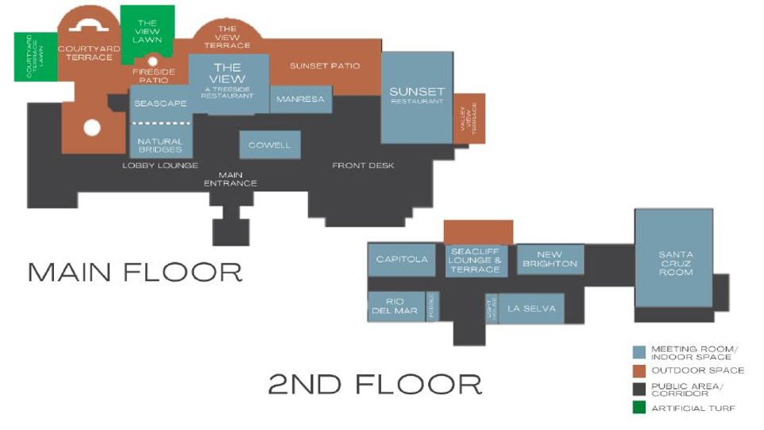

Notes for CIDR 2022 In-Person Attendees at Chaminade
We are pleased you will be joining us for CIDR 2022 at Chaminade Resort in Santa Cruz. Here are some notes that you may find useful for your visit. If you have any questions or concerns, contact
CIDR2022Info@cidrdb.org .
Covid Precautions
- Attendees must bring proof of vaccination and enough masks for the duration of the conference.
- Masks must be worn indoors except during meals or when giving a presentation.
- Audience seats will be widely spaced for social distancing.
For private discussion, there is easy access to outdoor space just off the conference room and the dining room.
- Hotel staff will be masked.
- We ask all attendees to bring one antigen test for each day they are staying at the conference and perform a test every morning. We have a limited number of antigen test kits available in case you cannot obtain antigen tests yourself.
- Contactless check-out: no need to visit the front desk. Chaminade will email you your receipt.
- Check-in: there is no contactless option for check-in. You will need to present some identification and your credit card to get your room key.
Upon Arrival
The resort comprises a main building with conference rooms, dining rooms and the front desk. Guest rooms are in the outlying buildings. Check-in is at 4pm.
Enter the main building and get your room keys at the Front Desk on your right. A central stairway leads to the Seacliff Terrace where you'll find the CIDR registration desk starting at 4pm. To the right of the registration desk is the Santa Cruz Room, our conference room. Our private dining room, the Sunset Restaurant is on the first floor directly beneath the Santa Cruz Room. For reference, see the floor plan at the bottom of this page.
Getting There
The resort is about 2 miles from the Pacific Ocean in the hills overlooking Santa Cruz.
Auto: The road to Santa Cruz (highway 17) can get congested so check traffic conditions (511.org or a phone app). If you are coming from San Francisco, highway 280 is a pleasant alternative to highway 101. For directions, see
Chaminade's guide on directions. Be wary of alternative driving routes suggested by smart phone apps unless you are familiar with the roads.
- Public Tranport: take a bus to Santa Cruz, then taxi or ride share (e.g., Uber/Lyft) to Chaminade.
- Bus from San Francisco airport: Both Greyhound and Wanderu offer bus service between San Francisco Airport (SFO) and Santa Cruz. Check their websites for schedules.
- Bus Santa Jose: scmtd
Things to Do
Chaminade Resort has a number of attractions including a spa and hiking trails through the property. Unfortunately, their outdoor pool is closed for renovation.
Santa Cruz is a beach town and a university town. The main beach attraction is the boardwalk with its rides, games and food. The University of California - Santa Cruz has a beautiful campus in the redwood hills above town. The Arboretum and Botanic Garden have an excellent collection of plants from California and the southern hemisphere.
Things to do in and around Santa Cruz:
At this time of year, there are two other nature events of note in the area. Monarch butterflies over-winter in the trees at Natural Bridges State Park in Santa Cruz. And a few miles up the coast (a nice drive, by the way), you can visit Ano Nuevo State Park and view the massive elephant seals where they come ashore to make more elephant seals. (Make reservations before you go).
Chaminade Main Building Floor Plan
